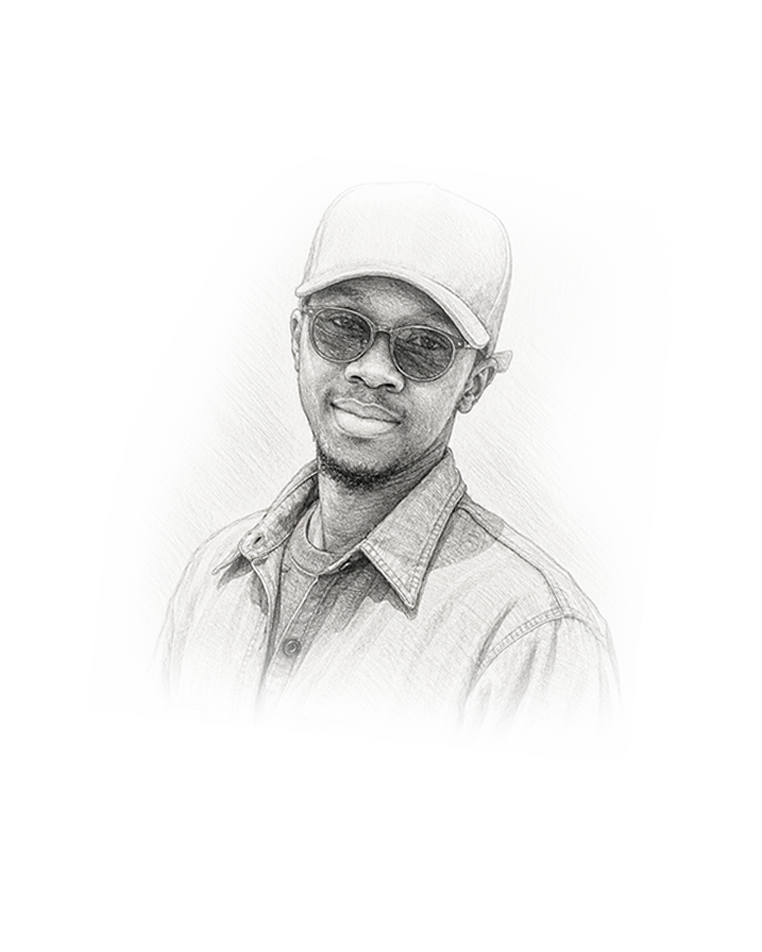

À propos
Designer graphique, créatif digital, et fondateur de Jenius Subtil Fiction.

Fondateur
Souleymane Faye
Designer graphique, créatif digital et futur expert en communication visuelle, je transforme les idées en identités fortes, cohérentes et mémorables.
Grâce à ma formation en Multimédia, Internet et Communication (MIC), je maîtrise l'ensemble du processus créatif : de la conception d'une identité visuelle à la création d'expériences numériques modernes, en passant par le design d'interfaces et le développement web front-end.
Passionné par le storytelling visuel, j'accorde une attention particulière à chaque détail pour concevoir des projets qui ne se contentent pas d'être beaux, mais qui transmettent un message clair et laissent une empreinte durable.
Aujourd'hui, j'accompagne les marques, entreprises et porteurs de projets dans la création d'univers visuels impactants, pensés pour se démarquer et évoluer dans un environnement numérique en constante transformation.
Parcours
Formation
Multimédia, Internet & Communication — Dakar.
Pratique
Premiers clients, branding & visuels.
Expertise
Front-end, WordPress, design d'interfaces.
Aujourd'hui
Studio créatif complet pour marques.
Outils
Photoshop
Illustrator
Figma
Lightroom
VS Code